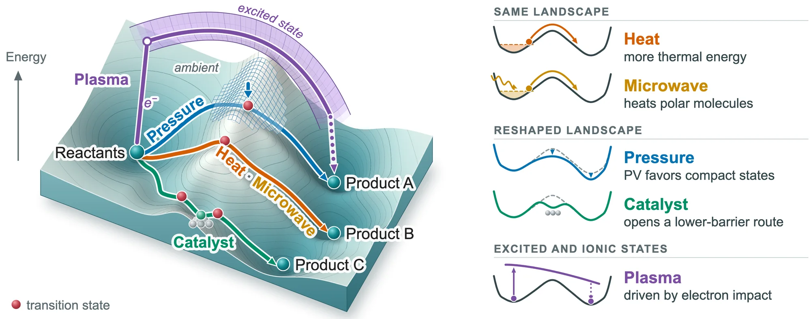
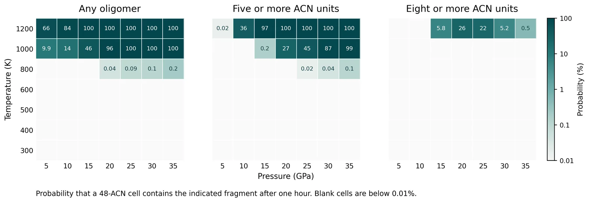

What I’m working on now
I am a research intern at Oak Ridge National Laboratory, where I study how pressure, solvents and metal surfaces change the reaction pathways of acetonitrile. Most of this work is still in progress.
The project
Thermal energy allows a reaction to cross its barrier, but it does not change the energy landscape. Pressure, solvents, catalysts and plasmas can change the landscape itself and may open reaction pathways that heating alone cannot reach. I work on an ORNL project led by Ilia Ivanov that studies how these conditions change the transition states and pathways of molecular reactions.
Acetonitrile is our first test system because it forms chains, rings and polymers under very different conditions and is small enough to simulate in detail. We study its reactions in three environments, which are the compressed crystal, mixtures with alcohols, and films on alkali metals.

Finding reaction steps
These reactions are too slow for DFT molecular dynamics, so we simulate them with machine-learned interatomic potentials. I wrote ReactionFlow to find the reactions in these simulations. It monitors the bonds during the run. When a new bond persists, it pauses the run, relaxes a frame from before and after the event, and connects the two with a climbing-image nudged elastic band calculation to locate the saddle point. The barrier is kept only if the saddle has one negative mode and relaxes to the two states on either side. ReactionFlow then resumes the run from where it stopped, and we recompute the barrier with DFT.
These results depend on the accuracy of the potentials, so we first benchmarked fifteen pretrained potentials against DFT along 9,017 reaction pathways.

Under pressure
Crystalline acetonitrile polymerizes when it is compressed and heated. DFT molecular dynamics at 35 GPa, heated to about 1,100 K over 10.7 ps, forms no bonds because these reactions require nanoseconds. We therefore fine-tuned a machine-learned potential on DFT data to reach these time scales. With this potential the molecules link into a network at 35 GPa and 2,000 K.
To resolve the individual steps, we assembled a connected path of nine steps from the crystal to a chain of five molecules and checked every state with a DFT single point. In the first step two molecules join through a new C–C bond while a hydrogen transfers to nitrogen. This step has the highest barrier of the nine, 2.66 eV with the potential and 2.67 eV with DFT. The later additions are easier because the early hydrogen transfers leave N–H groups in the growing chain. The fifth molecule adds through one of these groups with a barrier of 0.68 eV.

Other reaction steps at 20 GPa
Chain growth is one of several kinds of reaction step. At 20 GPa we located saddle points for eight local steps, which are C–C growth, C–N growth, coupling of two dimers, branching, hydrogen transfer between nitrogen atoms, closure of an eight-membered ring, a bond rearrangement, and NH3 release. Their barriers range from 0.1 to 2.2 eV. These steps start from different precursors, so their barriers cannot yet be used to rank the products.

Pressure and temperature
We used the checked steps in a kinetic Monte Carlo model to estimate what forms in a cell of 48 molecules after one hour at each pressure and temperature. At 800 K and below, almost nothing has reacted at any pressure. At 1,000 K the result depends strongly on pressure. The probability that the cell contains an oligomer is about 10% at 5 GPa and 96% at 20 GPa, and at 35 GPa the cell almost always contains a chain of five or more molecules.
This model is exploratory. It uses static barriers and a single prefactor, and the reaction network is still being extended. It predicts no reaction in the perfect crystal at room temperature, so the conversion observed at room temperature in experiments may begin at defects.

In alcohols
In alcohols, acetonitrile can trimerize to a triazine and react further to an aminopyrimidine. In the route we found, the first step is the addition of an alcohol across the C≡N bond. The arrangement of the alcohol around acetonitrile should therefore affect the reaction. More generally, we want to test whether the structure of a solution determines which reactions occur in it.
To study this structure, we searched for crystal packings of acetonitrile with methanol and with isopropanol at three ratios each. The figure shows the lowest-energy packing found at each ratio as one acetonitrile molecule and its twelve nearest neighbors. In the 1:1 packings every hydroxyl group forms a hydrogen bond to a nitrile nitrogen. At the other ratios most hydroxyl groups form hydrogen bonds to other alcohol molecules.
These structures come from searches with a machine-learned potential. All of them are higher in energy than the separate pure crystals, so they should be regarded as candidate structures.
On alkali metals
Alkali metals change the reaction again. Experiments on sodium indicate pyrimidine rings as the product. We followed a film of acetonitrile on the (100) surfaces of Li, Na and K step by step, with every state reached from the previous one and every barrier checked with DFT. On sodium, ten steps lead to the aminopyrimidine ring. The largest barrier before the final hydrogen transfer is 12.3 kcal/mol, and the final hydrogen transfer costs 22.2 kcal/mol.
Predicted products
The barriers alone do not determine the product distribution. We therefore used the 211 connected steps on the three metals, with their DFT barriers, in a kinetic model that follows one reaction center starting from the unreacted film. At room temperature sodium forms the aminopyrimidine ring, which is the product observed in experiment, and remains as its amide. Potassium follows the same first steps but stops at an open-chain dimer. Lithium couples two molecules directly and forms no ring.
This model is also exploratory. The time sodium needs to form the ring ranges from seconds to about a day depending on how the barriers are referenced, and it is not yet settled whether the lithium dimer is C–C or N-linked.

Goal
Each of these studies gives a map of the reaction, with every step from the starting molecules to a product and its barrier. The goal of the project is to resolve the transition states reached under pressure and then to reach the same transition states under milder conditions, so that a reaction pathway can be selected through its environment. The simulations are combined with high-pressure, neutron and Raman experiments in the same project.
Most of this work is in progress, with manuscripts in preparation. My ORNL research page gives a more complete account, including every route with its charts and structures.